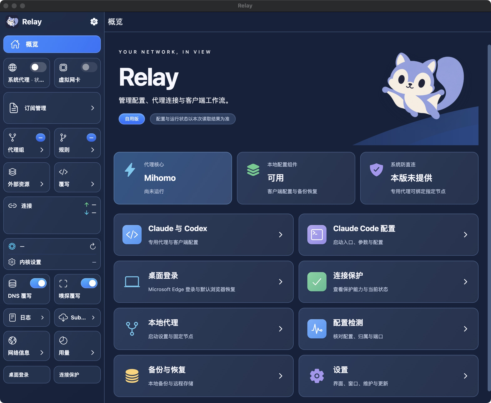
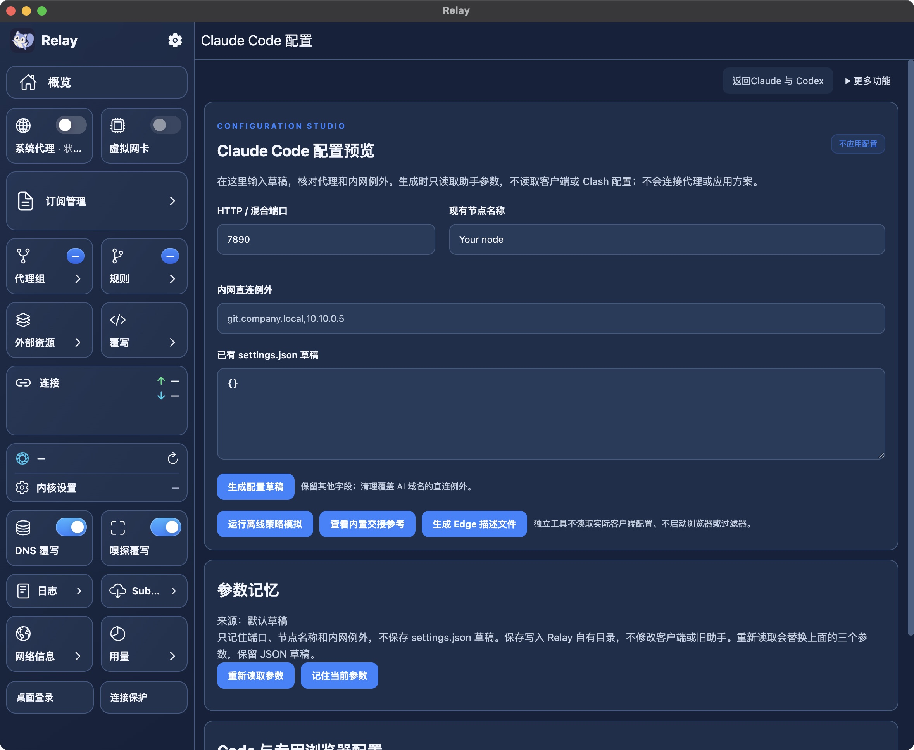

01 / CONNECT
管理你的连接
导入本地配置或订阅，查看代理组、节点延迟与分流规则。选中配置即可运行。
YOUR NETWORK, IN VIEW
把代理、分流和 AI 工作流，
放进一个清晰的 macOS 网络工作台。
macOS 13+Apple Silicon & Intel

准备好下一段连接。Apple Silicon 与 Intel · 构建 24
EVERYDAY, SIMPLIFIED
从导入配置到选择节点，每个模块各就其位。
打开主窗口管理细节，也能从菜单栏快速操作。
导入本地配置或订阅，查看代理组、节点延迟与分流规则。选中配置即可运行。
在连接、日志与网络信息中查看当前状态。侧栏保留常用开关、数量和流量读数。
为 Claude 与 Codex 配置专用代理。把客户端配置、浏览器入口与备份恢复集中管理。
INSIDE RELAY
从工作区概览到 Claude Code 配置，
实际运行的 macOS 应用，使用空白配置演示。

BUILT AROUND YOUR WORKFLOW
配置专用代理，绑定指定节点。
从终端到浏览器，连接设置有迹可循。
检查 Relay 当前专用 HTTP 代理后，再应用 Claude Code 代理配置。修改前保存备份，保留无关配置与已有绕过项，支持恢复。
保护范围说清楚：专用代理处理进入它的流量。本版本不提供系统级逐进程防直连；应用绕过代理或命中绕过规则时，不在该保护范围内。
MAKE IT YOURS
使用自己的本地 YAML 或订阅地址。已有 Clash Party 配置可作为迁移起点。
选择配置与节点，按需要启用系统代理或配置专用代理。两者有不同的作用范围。
核对代理端口、规则和客户端配置，再通过连接信息确认流量进入了预期代理。
YOUR NEXT CONNECTION
V1.0.0 · macOS 安装包与完整源码
M 系列芯片的 Mac
待验证发布 安装包生成后，将在此提供下载及 SHA-256。Intel 处理器的 Mac
待验证发布 安装包生成后，将在此提供下载及 SHA-256。首次使用 · 安装时需要 macOS 管理员授权。Relay 初始配置为空，请在「订阅管理」导入自己的 YAML 或订阅。
构建 24 的两个安装包都集成了 TUN。Apple Silicon 版已通过登录自启和联网实测，Intel 版已核对架构与应用签名，原生运行仍待验证。
阅读完整版本说明与已知边界 ↗A FEW THINGS TO KNOW
Relay 是基于 Clash Party 的派生项目，使用 Mihomo 内核，并增加了面向 AI 客户端的配置与浏览器工作流。源码保留上游归属与适用的 GPL 许可，不是 Clash Party 官方发行版。
可以保留两个窗口用于比较，但监听端口必须错开。系统代理设置由系统共享，不应让两者同时反复接管；TUN 也不建议同时启用。切换使用时，需要核对实际代理地址和客户端配置。
不能这样理解。需要先配置客户端使用 Relay 的专用代理，并确认流量实际进入代理。本版本不是系统级进程防火墙，无法保证拦截忽略代理设置的应用或所有直连流量。
专用浏览器使用独立配置目录及 Relay 当前专用代理。桌面登录流程可能临时调整 HTTP/HTTPS 默认打开入口，并记录恢复信息；完成后可恢复原来的默认浏览器。它不等于操作系统级流量隔离。
此版本安装的独立卸载组件会监测 Relay.app 进入废纸篓，按顺序恢复 Relay 管理的配置、停止并移除其组件、清理专属数据与登录项，最后移除自身。卸载会删除 Relay 的专属数据，请先保留需要的配置备份。无法确认归属或恢复失败时会保留恢复记录。
在苹果菜单的“关于本机”中查看：如果显示 Apple M 系列芯片，选择 Apple Silicon；如果显示 Intel 处理器，选择 Intel。具体版本与可用状态请查看上方下载区域。
THANK YOU FOR YOUR SUPPORT
如果 Relay 对你有帮助，欢迎随心赞助，支持后续维护与更新。谢谢你的认可！
使用支付宝扫一扫，或点击原图保存后识别。